GOLF CLUB ENGINEERING & MANUFACTURING
From first sketch
to finished club.
From engineering review and clubhead process coordination to in-house assembly and quality control, we organize the production route around the approved design, specifications and delivery requirements.
IN-HOUSE ENGINEERING
CLUBHEAD MANUFACTURING
IN-HOUSE ASSEMBLY & QC
SPECIALIST PARTNER NETWORK
COMPANY-PROVIDED PRODUCTION ENVIRONMENT
ENGINEERING, ASSEMBLY & QC — ONE COORDINATED MANUFACTURING ROUTESCROLL TO EXPLORE ↓
A CONNECTED DEVELOPMENT SYSTEM
One club. Many disciplines.
One accountable process.
A golf club is the result of many connected decisions — from head geometry and material selection to machining, finishing, assembly and final inspection.
PGM × YIBANG combines in-house product engineering, club assembly and QC with a specialist manufacturing network. For clubhead projects, we coordinate suitable forming, machining, joining and finishing routes according to the approved design and specification.
01 / R&D & ENGINEERING
Ideas become
engineered products.
We support golf club development from an initial sketch, customer drawing or physical reference sample — translating design intent into engineering information for review and development.
 PGM PRODUCT DEVELOPMENT
PGM PRODUCT DEVELOPMENTPRODUCT DEVELOPMENT IN PRACTICE
Collaborative product development.
A collaborative setting for reviewing golf club samples, product details and development direction. Discussions help clarify design priorities and the next steps for product development.
EXPLORE CUSTOM DEVELOPMENT ↗
Concept Sketching
Early visual direction and product concept exploration.

2D Engineering Drawings
Dimensioned drawings and engineering details for review.
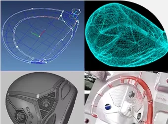
3D CAD Modeling
Three-dimensional product models and structural visualization.
Reverse Engineering
Reviewing a physical reference sample to understand its form and construction requirements.
Structural Design
Product structure review based on the intended club category and project brief.
Tooling Development
Tooling requirements and development coordination for approved product designs.
01Brief & Reference
→02Engineering Review
→032D / 3D Design
→04Tooling & Sample
ENGINEERING EVIDENCE
Real development references
behind the engineering work.
Use company-provided drawings, CAD references and development photos to show how a project moves from concept review to engineering definition. Confidential customer information should be removed before external sharing.

These materials are development references from different projects and stages; they are not presented as one single customer case.
02 / CLUBHEAD DEVELOPMENT & MANUFACTURING
Clubhead production
engineered to specification.
We coordinate clubhead production routes — including casting, forging, CNC machining, joining and surface finishing — based on the design, material, geometry and approved specifications. Selected specialist operations may be completed through our long-term partner network.

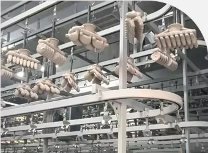
FORMING / 01Precision Casting
Casting routes are evaluated according to the component geometry, material and required construction.
PROCESS CAPABILITY · PROJECT-BASED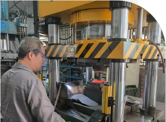
FORMING / 02Closed-Die Forging
Forging process options are reviewed against the target head design and material requirements.
PROCESS CAPABILITY · PROJECT-BASEDMACHINING / 01CNC Precision Machining
Precision machining supports defined dimensions, interfaces and detailed component features.
PROCESS CAPABILITY · PROJECT-BASED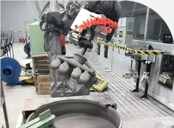
AUTOMATION / 01Robotic Automation
Automation resources can support selected manufacturing and processing operations.
PROCESS CAPABILITY · PROJECT-BASEDW
JOINING / 02
Welding & Joining
Joining methods are selected according to the component design, material compatibility and assembly requirements.
PROCESS CAPABILITY · PROJECT-BASED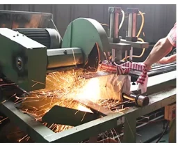
FINISHING / 01Grinding & Polishing
Surface preparation and refinement for selected components and product details.
PROCESS CAPABILITY · PROJECT-BASED3D
ADDITIVE / 01
Metal 3D Printing
A project-specific option for selected metal components, subject to design, material and feasibility review.
PROJECT-SPECIFIC PROCESSThe wide process overview is an illustrative visual. Process photographs in the cards are company-provided references. Equipment ownership and the allocation of individual processes between in-house resources and specialist partner factories are confirmed for each project.
MATERIAL SELECTION
Material follows
the product design.
Material selection is reviewed by component, structure, performance target and approved specification. Availability depends on the product and project.
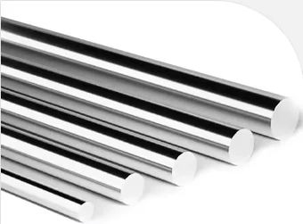
Stainless Steel
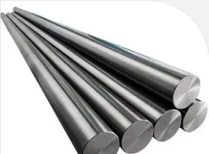
Titanium Alloy
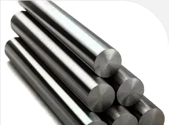
Aluminum Alloy
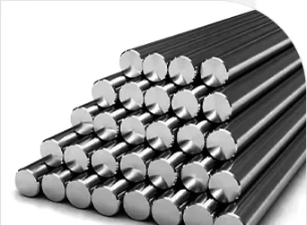
Zinc Alloy
03 / SURFACE FINISHING & DETAIL
Finish is part
of the product identity.
Surface treatment influences the look and feel of a golf club. Available options are reviewed according to the head material, product design, target appearance and project requirements.
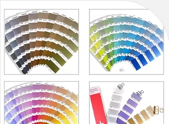
COMPANY-PROVIDED FINISH REFERENCEColor, coating & finish direction
CUSTOM FINISH. CLEAR SPECIFICATION.Finish samples, color references and process feasibility can be reviewed during the development stage.
SPECIALIST PROCESS REFERENCES
See selected process routes
in real production references.
These company-provided production references help explain how specialist clubhead manufacturing processes may be organized. Selected forming, machining and surface-process operations may be completed through long-term specialist partners according to the approved project route.


Captions identify the relevant process context. They do not imply that every process shown is completed in-house for every project.
04 / GOLF CLUB ASSEMBLY
Built to the
approved specification.
In-house assembly operations bring club components together through controlled preparation, bonding, grip installation, specification adjustment and set matching.
IN-HOUSE ASSEMBLY
From components to a matched club set.
Assembly details are defined by the approved product specification and component combination. Length and swing-weight adjustments are checked against the agreed requirements.
05 / QUALITY CONTROL OVERVIEW
Quality starts
with clear specifications.
Our in-house QC function checks agreed product requirements through dimensional, weight, configuration and appearance inspections. Detailed equipment references and inspection documentation are presented on the dedicated Quality Control page.
Dimensional checks
Club length and other agreed dimensions.
Weight & balance
Clubhead weight and swing-weight requirements.
Appearance & assembly
Finish, logo placement and agreed assembly details.
ASSEMBLY & QC REFERENCES
Make assembly and inspection visible
with company-provided shop-floor photos.
These photographs show references from the in-house assembly and quality-control environment. They help buyers understand how components are assembled, reviewed and checked before shipment.

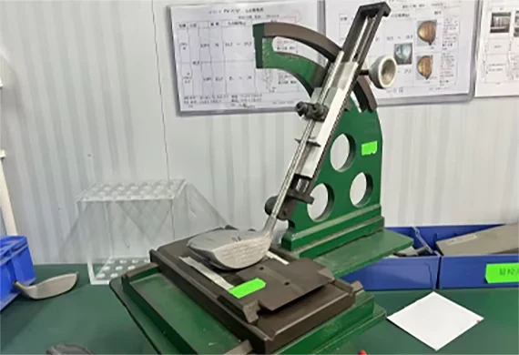
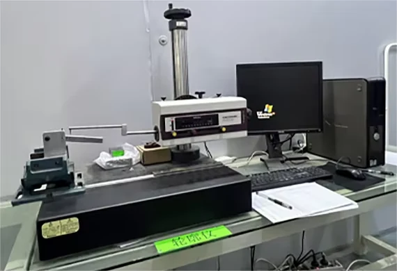
For the complete inspection-equipment list and more QC detail, visit the dedicated Quality Control page.
06 / HOW WE ORGANIZE PRODUCTION
Clear ownership.
Coordinated capability.
Our manufacturing model combines in-house engineering, assembly and QC with selected specialist processing completed through long-term partner factories where required.
Engineering & Development
Concept review, hand sketching, 2D drawings, 3D modeling, structural design, sample development and tooling coordination.
IN-HOUSE TEAMClub Assembly & QC
Component preparation, shaft and grip installation, length and swing-weight adjustment, set matching and agreed final inspection.
IN-HOUSE TEAMClubhead Manufacturing Network
Selected casting, forging, machining, joining and surface-treatment processes are coordinated with long-term specialist manufacturing partners according to each approved head design and project specification.
PARTNER-SUPPORTED PROCESSESPROJECT-BASED PROCESS ROUTE
The process follows the product — not the other way around.
07 / OEM & ODM NEXT STEP
Have a drawing,
sample or club idea?
Share your sketch, reference sample or target specification. We can review the development brief, manufacturing route and the next actions needed to move your project forward.
01Project brief
02Engineering review
03Sample development
04Process confirmation
05Assembly & QC
06Delivery coordination